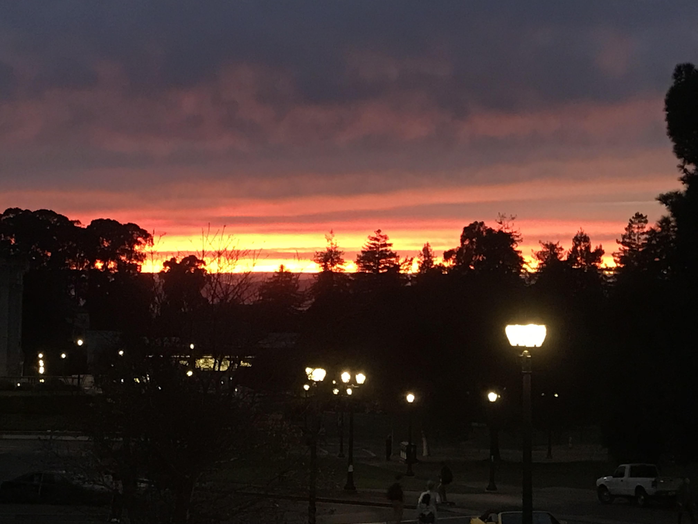
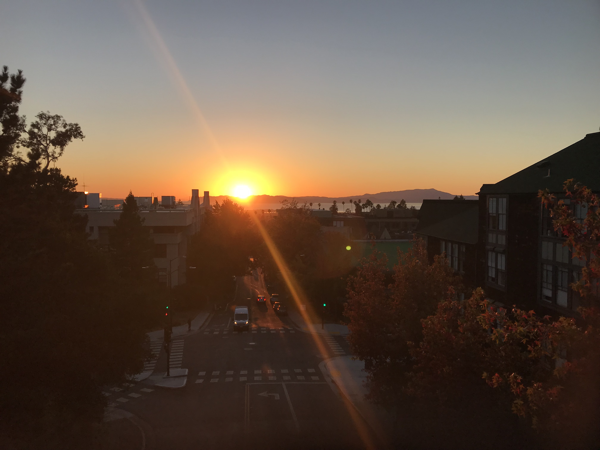

I am interested in computer science and mathematics, and hope to focus on Deep Reinforcement Learning, Theoretical Statistics, and Convex Optimization in my junior and senior years.
Computer Science: CS 61A (Structure and Interpretation of Computer Programs), CS 61B (Data Structures), CS 61C (Machine Structures), CS 170 (Efficient Algorithms and Intractable Problems), CS 189 (Introduction to Machine Learning)
Math Courses: Math 1B (Calculus II), Math 53 (Multivariate Calculus), Math 54 (Linear Algebra and Differential Equations), CS 70 (Discrete Math and Probability), Math 110 (Linear Algebra), Math H104 (Honors Real Analysis), EECS 126 (Probability and Stochastic Processes), EECS 127 (Optimization Models)
Since Fall 2019, I have been a research assistant under Mahesh Srinivasan in the Language and Cognitive Devlopment Lab, doing computational modelling and data analysis in relation to math conception.
Albums I Like:
Photos I Took:
 